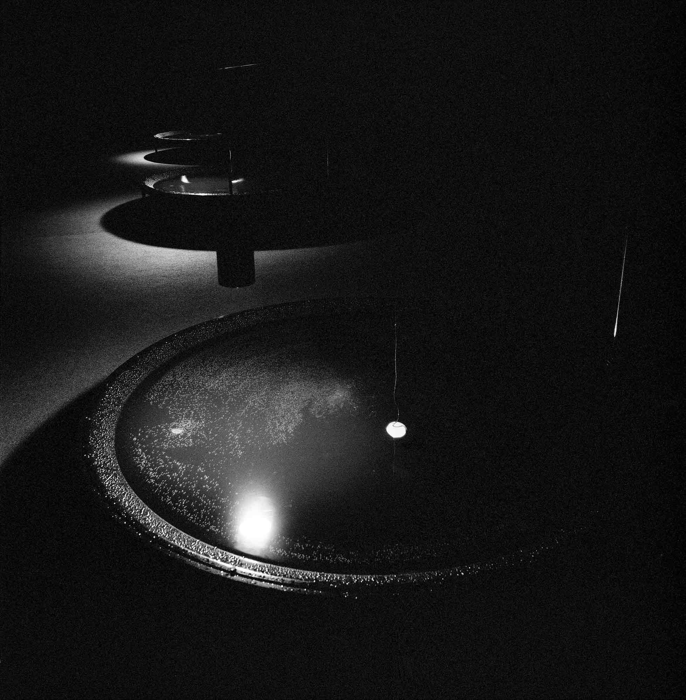

Against All Evens, Göteborgs Konsthall, Gothenburg
2003
The space in our use at the Göteborg Biennale for Contemporary Art was a long, narrow, tall room. Like the
other exhibition spaces, it was darkened according to the specifications of curator Carl Michel von Hausswolff
to prevent daylight from entering.
The room was muted acoustically by the use of black wall-to-wall carpeting. On the floor stood three black
aluminium water basins, round in shape, and separated by equal distances according to the darkened skylight
windows on the ceiling. All of the basins were connected to one another by a siphon tube in order to keep the
water level equal. The water was pumped from the pools upwards to the ceiling, from where it dripped back down
into the individual basins. The pumping apparatus was equipped with a timer, designed to ensure that the drops
fell at maximally equal intervals.
The sounds of the falling water drops plopping on the surface of water were recorded with underwater
microphones installed in the individual basins. The sound yielded a constantly shifting rhythm patterns and
this sonic material was amplified and played back by four speakers, one in every corner of the space.
The room was completely darkened and the only sources of illumination were three dim incandescent lamps
suspended above the water basins. The light was reflected on the surfaces of the water, casting circular
luminous patterns on the ceiling and the walls.
